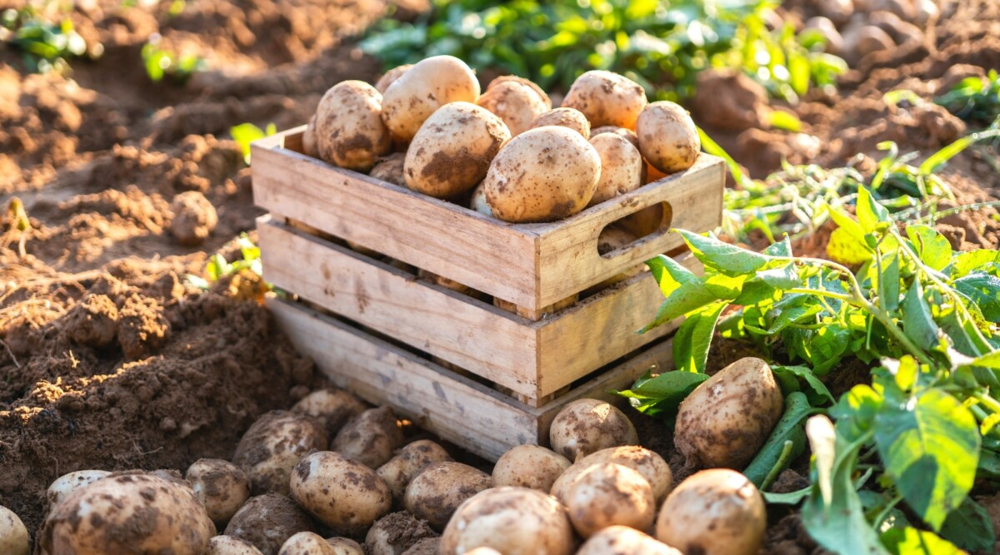

Potato
Best Potato Planting Practices: Potato is a cool season crop and grows best between 15 and 18 oC and soil pH of 5.5 to 6.0. Temperatures above 21 oC have adverse effects on growth.grown in the highlands at altitudes between 1500 and 3500 meters above sea level. These areas are characterized by cool temperatures with high rainfall of at least 1000 mm per annum.Potatoes are grown from specially prepared ‘seed potatoes’ (small tubers), usually planted in spring. With early varieties, the seed potatoes can be ‘chitted’ (or encouraged to sprout) before planting, to get them off to a head start and produce an earlier crop.
Best Fertilizers for Potato Farms:Ammonium polyphosphate (10-34-0) is the most commonly used liquid P fertilizer and is suitable for banded application in potatoes. A variety of related liquid products are available and suitable, although they have lower P contents. Orthophosphate P, as found in MAP and DAP, is the form of P taken up by plants.
Pest management for Potato: A pathogen can be lodged in the plant or tuber for a long time without symptoms (latent infection – e.g., bacterial wilt). • Late blight, bacterial wilt, soft rot (or blackleg), viral diseases, potato tuber moth, and nematodes are some harmful diseases and pests. • Pest/disease control strategy: Break the harmful nexus.
Harvesting and storage for Potato: Potato are ready for harvesting approximately 4 weeks after flowering. Observe the vines for signs of senescence (drying out). Some farmers cut back the stems to encourage hardening, for a period of 3 or 4 weeks. Use a fork jembe when harvesting to prevent excessive damage to tubers. Store the tubers in cool, dry conditions, away from direct sunlight for maximum shelf-life.